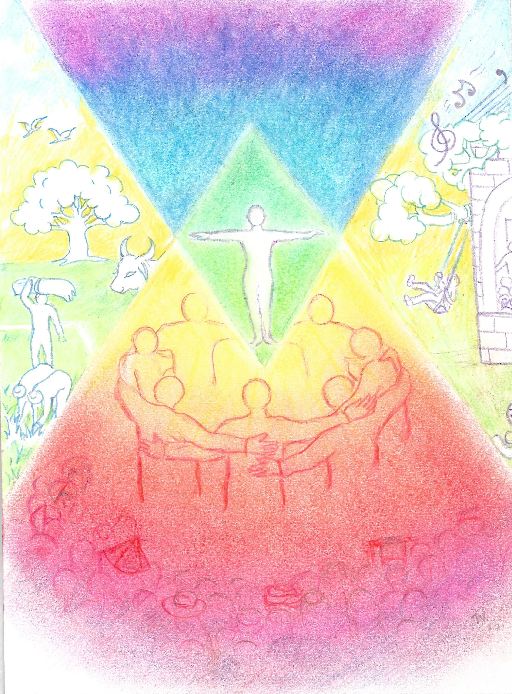
This Conference is part of the Celebrations world-wide to commemorate the 100 years of Anthroposophic Medicine. It is also a gift to the people of this region and an opportunity to come together in a spirit of celebration.
We owe a debt of gratitude to Dr Rudolf Steiner – a Spiritual scientist of Austrian-German origin & Dr Ita Wegman, a doctor from Holland for introducing this. What began humbly as a Course of lectures to a group of 40 doctors in 1920 has transformed over a Century into a system of Medicine that recognizes the spiritual nature of a human being, that he sojourns cosmic & earthly worlds every day of his life and is guided by higher beings towards the fulfillment of his destiny.
Being human gives us the possibility of learning from illnesses, an opportunity denied to the rest of Nature. This is the price we pay to be conscious human beings. To be conscious also entails the taking in the world around us, having thoughts about it and in forming judgments. This is a uniquely human activity.
Health is not only ‘not being ill’. Health is a state of equipoise - where the illness bringing forces are balanced not only by medicines but to start with - an education that understands the child and works towards unfolding the innate capacities at the right time. This activity needs to be supported by nutrition that builds health into the body. A nutrition that makes us true inhabitants of the earthly realm.
These are the strategies for Primary Prevention for fostering health and strengthening our unique human principle - The ‘I’ and keeping disease at bay.
This is why it is fitting to have Anthroposophic Medicine, supported by Waldorf Education and Bio - Dynamic farming to engender One - Health!
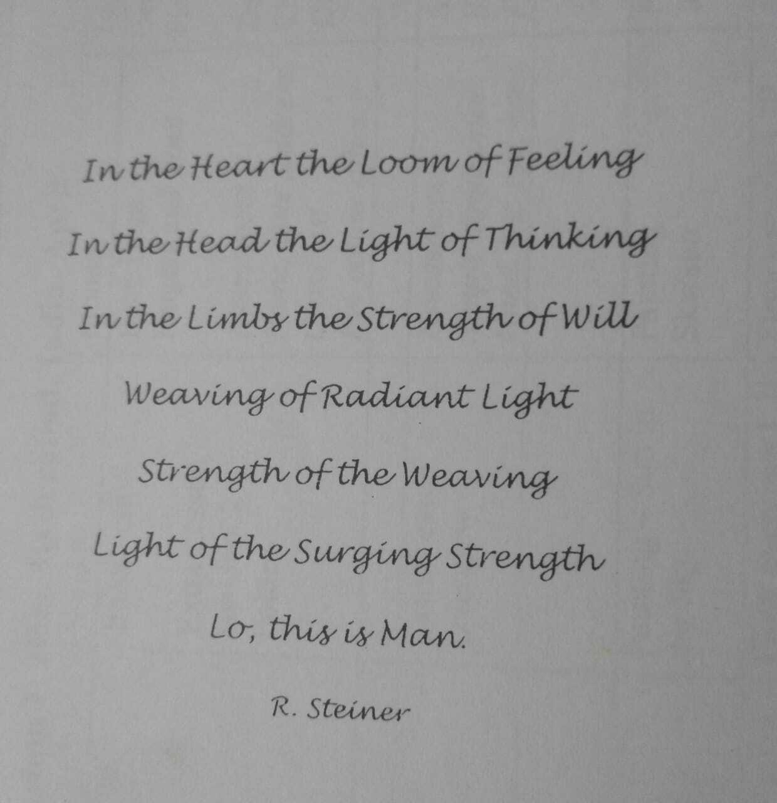
Conference Programme
A confluence of Medicine, Education & Farming.
Introduction of Faculty
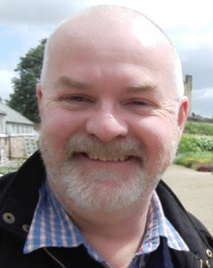
Dr Neil Boland
Dr Neil Boland is Senior Lecturer in the School of Education at Auckland University of Technology, New Zealand, and Associate Professor at the National Tsing Hua University, Taiwan. He has worked as a teacher K-18 and is active around the world as a teacher educator. His interests include the renewal of Steiner teacher education, the development of localised curriculum and Steiner education as a contemporary movement for social justice. Neil publishes widely on education, exploring territory between Steiner education and anthroposophy and other pedagogies and philosophies.
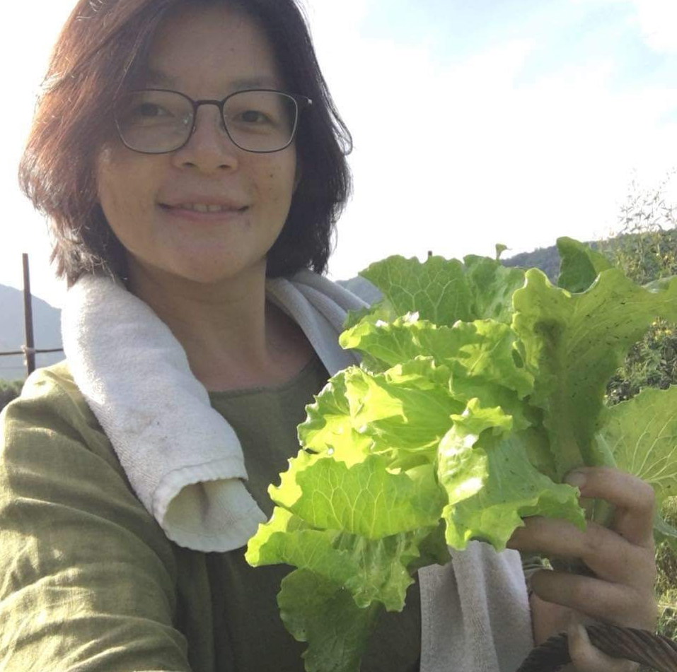
Gloria Sun
Gloria Sun Current biodynamic practitioner, in love with Anthroposophy especially gardening and art. Co-founder of Threefold living studio in Taiwan, managing publishing, educational garden, seminars, bookstore in Yilan, Taiwan. Initiated a local CSA movement, which has 60 members for now. Continue taking on new initiative in agriculture, education in anthroposophical publishing and translating.
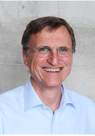
Dr. Georg Soldner
Medical studies and further education as a physician/specialist in paediatrics. Anthroposophic medical group practice in Munich, Germany, since 1994, with an emphasis on treating children with chronic diseases. Member of the Board of the Society of Anthroposophic Physicians in Germany (GAÄD) since 1993 and head of the Academy of Anthroposophic Medicine there since 2013. Member of the Commission C for Anthroposophic Drugs at the German Federal Institute for Drugs and Medical Devices. Many years of experience in lecturing and publishing, including his main work “Individual Paediatrics” together with H.M. Stellmann, and serving as editor-in-chief of the Vademecum of Anthroposophic Medicines.Deputy head of the Medical Section of the School of Spiritual Science at the Goetheanum since 2016.
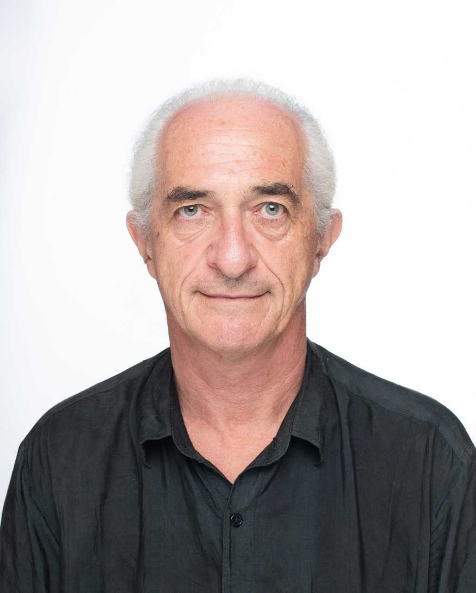
Walter Siegfried Hahn
Growing up on a farm in Bavaria, Walter went into his own practical research on organic farming with 15 and met Biodynamics at 17. Since then he has been farming, gardening and teaching with a special emphasis on practical and sensory experience. After founding and heading several organisations in Germany and Switzerland, since 2009 he has acted as President of www.koberwitz1924.com in Palawan, while he also works as a BD advisor and lecturer in China and SE Asia.
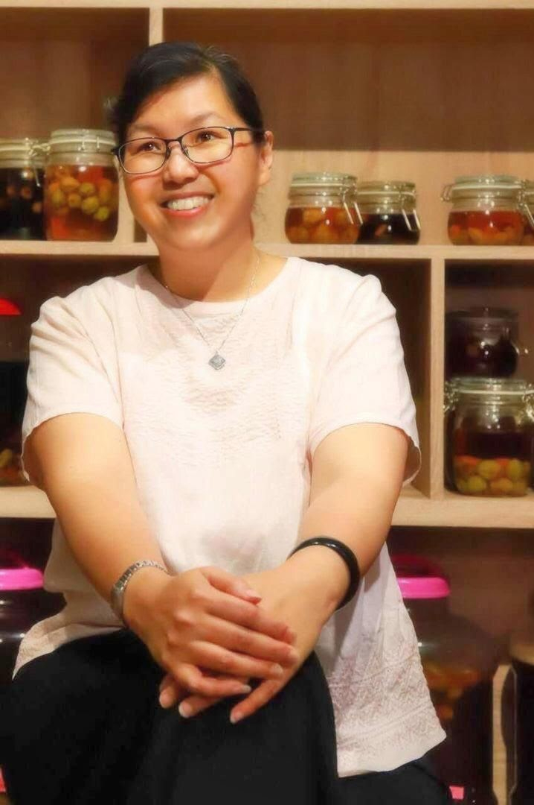
Dr. Joean Oon Siew Kee
In 2001, Dr Joean’s husband suffered from terminal liver cancer. After one a half month in the hospital, he was asked by doctors to go home. She went around looking for manyalternative ways to help her husband to regain his health. Eventually she left her career and family life behind to study naturopathy. Dr Joean successfully obtained Naturopathydegree from Medicina Alternativa Institute of Colombo, Sri Lanka. Now, she is also a Malaysia registered Homeopathy consultant and physician.2006 is another turning point in her life when she met and studied naturopathy therapy and garbage enzyme with Dr Rosukon of Thailand. She did thousands of garbage enzyme public talks for environmental awareness across Malaysia and other countries like China, Indonesia, Singapore, Taiwan, Hong Kong, Brunei, Thailand and India.Since 2011, Dr Joean attended International Postgraduate Medical Training (IPMT) and studied Anthroposophic Medicine, Anthroposophic Nursing Care, Anthroposophic Art Therapy and Anthroposophic Child Development in various countries. With these trainings, she discovered the ways to help cancer patients’ body, mind and spirit.Since 2013 till date, with 4 others, She organized IPMT in Malaysia annually and held the Kolisko Conference in Kuala Lumpur in 2015.
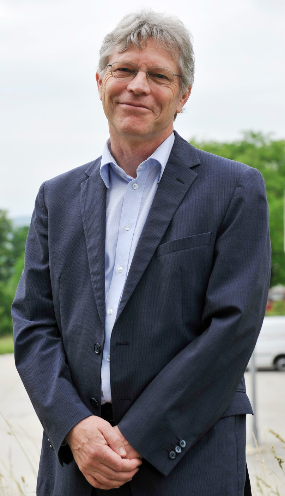
Florian Osswald
Florian Osswald from Switzerland, first studied process engineering. After training as a curative teacher in a Camphill organisation in Scotland, he attended the teacher training seminar in Dornach. He worked as upper school science and mathematics teacher at the Bern Rudolf Steiner School for 24 years and has been active internationally as pedagogical advisor. Since the beginning of 2011, Florian Osswald has been leading the Pedagogical Section at the Goetheanum in Dornach together with Claus-Peter Röh.
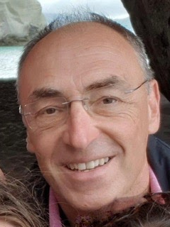
Dr. Matthias Seidel
Dr Matthias Seidel is an Obstetrician-Gynecologist in Tauranga New Zealand. Matthias trained in Germany and was a consultant at the Filderklinik- the anthroposophic collaborative hospital in Stuttgart-before moving back to NZ with his family to work as a hospital consultant in NZ. Matthias and Clare have begun working together to expand and further develop a community based, anthroposophical inspired service to help expectant parents explore and meet the needs of their incarnating child from conception to kindergarten. Matthias also has a strong interest in BD farming and tends an avocado orchard bio-dynamically.
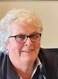
Clare Hutchinson
Clare Hutchinson, is a nurse-midwife and a founder-director of River Ridge East Birth Centre, one of the largest birthing centres in New Zealand. www.riverridgeeast.co.nz “I think anthroposophy should be visible in the world - in healthcare, education and agriculture - and influence the way we approach daily life. In the work at our Centre, we demonstrate that an anthroposophical impulse can be accessible, relevant and not exclusive or rarefied."
Dr. Porn Panasot
Since graduating from Chulalongkorn Medical School, Bangkok in 1980, I had spent the first decade of my career working for the health of child prostitutes, and abused children. After ten years of labor, I realized this would not be possible without a proper education for the whole society. In 1998, I found Panyotai Waldorf School in Bangkok and have worked as its school doctor since then. My work is always composed of three perspectives – medical, educational, and social with the aim of a healthy development of the children’s physical, mental, and spiritual health altogether. My strategy has consisted of both therapeutic and preventive work. This led to the recognition for my work from Ashoka International and the Task Force for Children in Thailand. In 2017 the Anthroposophic Medical Association of Thailand was founded and I have been the head of the association since then.
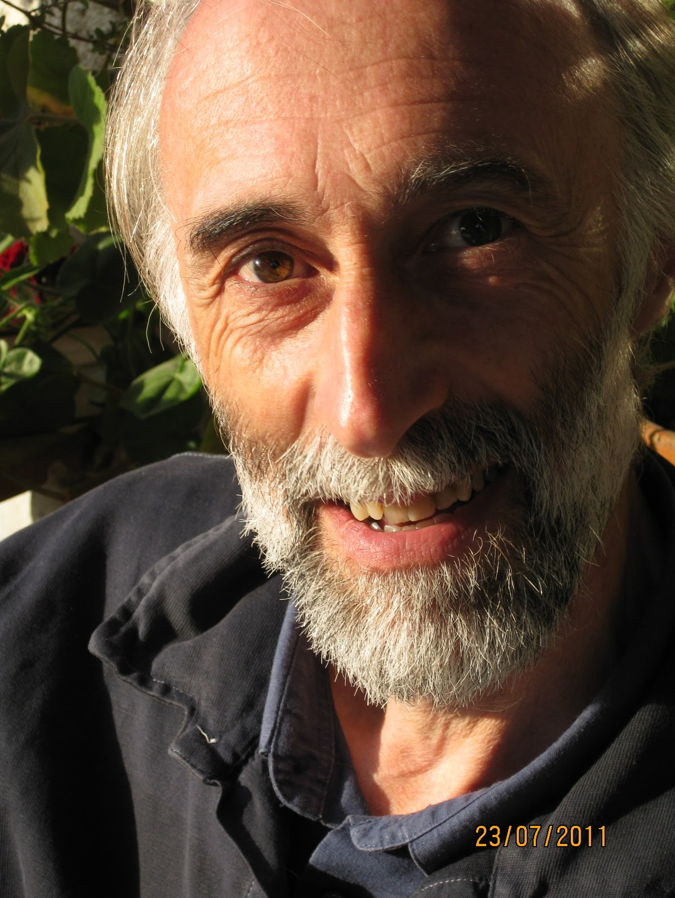
Jean Michel Florin
Jean-Michel Florin, born in 1961, Studium of agriculture and nature protection. Goethean science studies at the Goetheanum, Dornach. Coordinator of the french Biodynamic Association since 1988. Since 2010, co leader of the Section for Agriculture at the Goetheanum and of the Goetheanum leadership. Course and lectures about biodynamics, plants, landscape and social questions. Contributions in different magazines and books.